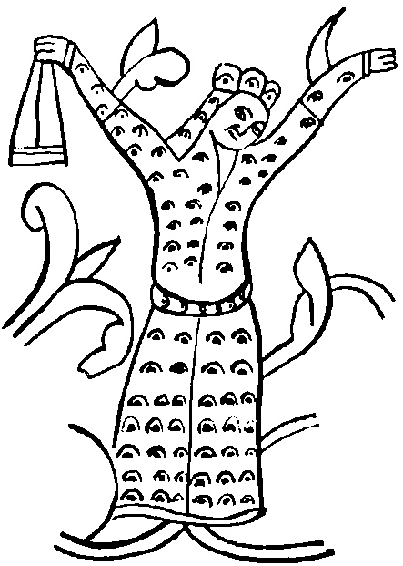

Çocuk değildim, ufacık sayılmazdım. Ele avuca sığmaz, delişmen bir kızdım. O gün ak boz aygırıma atladım. Hazar sübaşısı Demir Yaylı Tuğak kızı Selcük ben. Kınık boyunun “kız beyi,” Rav Maşiah Tengere’nin karısı, sekiz bala anası Selcük Aka. Hiç konuşmak, karışmak istemiyordum başkasının öyküsüne, nasıl oldu bilmem.
Nasıl oldu bilmem, her gün gittiğim yönün tersine gittim o gün. Atım bir ak sığını ürküttü. Sığın alçak bir tepeye sardırdı. Tepeyi aştı. Gözden yitti. Peşinden at teptim. Sonra yuları kastım, durdum. Sırtı bana dönük bir eloğlu, önümde yay çekiyordu. Yiğidin yay çekişini beğendim. Kulağının tozunu beş parmak geçmişti gerilen kiriş. Tam bıraktığı anda altındaki yaban eşeği deprendi. Yüreğe gidecek ok, sığının bacağına değdi. Kendi okundan daha çevik delikanlı, boz eşeğin sırtından yere atladı. Yanına ulaştığımda elinde kanlı bir yürek vardı. Gök gözleriyle gözlerime baktı. İçim bir hoş titredi. Bu eli kanlı yiğit ne yiğitti? Bu gözler ne gözlerdi?
Uzun kara saçlı, eski kızılca börklü, gen yerde bozkır gibi geniş omuzlu, dar yerde Ten gibi ince belli, uzun yay bacaklı, tozluca çizmeli, beli güzelce altın kemerli, tepeden tırnağa yahşi erdi bu yiğit. O duruşu, o bakışı pek beğendim. O gözler kendilerini, kilimde yanış gibi, heybede nakış gibi içime işlediler. Ah, o kısık, o delici, o gömgök, gökyüzü gibi gözler! Hazar’da bir eşini görmediğim bu yiğit kimdi diye düşünürken anladım ki, buralarda beklenen şahtır, kendi gelmiştir, özü gelmiştir, Maşiah’tır! Yaklaştım. Selam verdim. Hay yaklaşmaz olaydım! O koku ne kokudur? Ten Suyu yanı başında akar da kişioğlu böyle kokar mı? Yiğit değil de teke midir? Teke değilse ininden on yıl çıkmamış börü müdür, kurt mudur? Hiç mi su yüzü görmemiş bu yiğit? Geri durdum.
Düşündüklerimi okumuş gibi Ten kıyısına indi. Yumuşak çamura bek bastı. İçimde umut ışıkları yaktı, sonra söndürdü. Yalnızca kanlı ellerini yumaya gitmiş! İstediği kadar “değilim” desin, bir kez daha anladım ki, bu kurt gibi ekşi kokan yiğit, Maşiah’tır. Daha konuştuk. Daha söyleştik. Adını sanını öğrendim. Kolca kopuzuyla çaldı söyledi. Kimin nesi imiş, bir bir dedi. Tengere Tardu’ymuş adı. Tiginmiş! Köktürkmüş! Hangay diye bir yerden geliyormuş. Hoş, eğlenceli, gülünç yiğitti. Oğuz’dan kopmuş gelmiş olsa gerekti. Gülerek dinledim. Maşiahlık işinde ivdiğimi anladım. Sonra, kararmış gözaltlarına, incelmiş avurtlarına baktım. Anladım ki ağzına günlerdir lokma girmemiş. “Gönderirim” diyerek atımın boynuna düştüm.
Arkamdan dünyadan elini eteğini çekmiş bir Maşiah değil de er gibi baktığını sezdiğim için midir, nedir, yiyecek ve üst başı babamın gece karavaşı sarı Konguz’la gönderdim. Yalvardım. “Konguz Apa, bir iyice bak, gel, ne yiğittir?” dedim. Dediğim yere gittiğinde geniş omuzlarını, dar belini arkadan görmüş karavaş. Ten içinde çıplak bir tenmiş, akan suda yıkanan bir canmış. Ama ne tenmiş, ama ne canmış! Öne eğilmiş, kendi saçlarını kazıyormuş bir keskin bıçakla. Konguz’u uzun süre görmemiş. Konguz Apa’ın sinmiş bir çalının ardına göreceğini görmüş. lengere, kıyıdan kopardığı tutam tutam otları killere bulayıp kendini ovmuş, bir güzel yıkanmış, yıkanmış. Sarı Konguz öyle arsızca, öyle ağzı sulanarak, öyle ayrıntılı anlattı ki bu yıkanma işini, kıskançlık bir ulu ırmak oldu, damarlanma yürüdü. Gözünü korkuttum.
“Konguz Apa, Benyamin İncir’inden başka yemişe el uzatma, Tuğak’a söylersem ona da uzatacak el bırakmaz sende.”
Yoksula yazık oldu. Biliyordum ki ne yaparsa Tuğak’ın demesiyle yapıyor. Ama tazelik, kıskançlık işte.
Gece, yerimde duramıyordum. Tengere’yle konuşmak, öğrenmek, öğrenmek istiyordum. Dede’nin evindeydi. Tuğak bir ara gitti geldi. “Şu senin Maşiah, ne hoşça deli bir oğlanmış öyle” dedi. Yarışacaklarmış! Babamın biraz önce Tengere’yle konuştuğunu düşününce yanına gitme isteğim dizginlenemez bir durum aldı. Gecenin bir yansında, artık dayanamadım. “Gece epeyce yaşlandı, Tengere’ın uyumuştur anık!” dedim, kalktım, gizlice evden çıktım. Dede’nin, kokumu alan iri, yırtıcı köpeklerinin başlarını okşayarak içeri girdim. Elimle koymuş gibi odasını buldum. Keçenin eteğini kaldırıp içeri girdim. Konguz’dan yıkandığını duymuştum, ama o ekşi kurt kokusu yıkanmakla gitmez, kendindendir sanıyordum. Burnum bu kokuyu almayınca şaşırdım. Biraz geri durdum. Uyumuyormuş. Yarı beline kadar doğrulup bana baktı. Çok utandım. Şimdi kalkıp bileğime yapışsa kime ne derim? Karanlıkta tanımayacağını düşünerek kendimi avuttum. Uyuyor bulsam ne olacaktı ki? Başucuna gidecek, bir kez yüzüne bakıp kaçmayacak mıydım? Çocukluk!
Yok, ben artık onsuz duramıyordum! Gece hiç uyumadım. Tan yeri ancak kızarmıştı ki, kendimi giyinmiş, kuşanmış, at sırtında buldum. Tengere’m, Korkut’un evinin önünde kısraktan süt sağan kullara bakıyordu. Hazar kızları hiç umursamaz böyle bir görüntüyü, ama bizim Tıgin’in ağzı açıktı, yanaklarını al basmıştı. Çok utandım o sırada orada olduğum için. Takıldım kendisine, ama kulaklarıma kadar kızardım. “Birlikte gezelim” dedim. Dede’den o sağlam kısrağı aldı. Gezdik. Tozduk. Sonra bir ağaç altına oturduk. Tengere’ın, dünkü gök kurt, uysal bir kedi gibi başını dizlerime koydu. Şaşırmıştım. Sevinçten çıldıracaktım. Kim olduğunu, nereden geldiğini anlatmaya koyuldu. O kadar yorgundu ki, yarıda uyudu. Yüreğim deli deli atıyordu. “Bu seslerden sevdiğim uyanır mı? Uyanır da görklü başını dizimden kaldırır mı?” diye korktum.
Uzun kirpikli gözkapakları o yabansıl gözlerini saklayınca yüzü ne kadar değişmişti? Sakalsız bıyıksız, bebek gibi yüzüne baktım. Bir gün önce bu kadar çocuk olduğunu anlamamıştım. Gövdesi kurt değil, kil, ot ve Ten Suyu kokuyordu. Tepesinin arkasında bir tutam olarak bıraktığı saçları dünkü kurtluğundan küçük bir anı gibiydi. O kuyruğu yavaş yavaş dokunarak sevdim, sevdim! Tengere’m, Tigin’im düşünde bana bir şeyler anlatmayı sürdürüyor gibiydi. Sonra uyandı. Kurulmuş yay gibi ayağa kalktı. “Kalk bey kızı yarışa” dedi. Yarıştık. Hem de ne yarıştık. Çok iyi ata biniyordu ama ben daha iyi biniyordum. Altındaki kısrak Sarkel’deki yavrusunun kokusunu aldığı için son adımlarda kanatlandı, kuş oldu, benim aygınını geçti!
Sonra babamla ok atıştılar. Bayındır Han’ın önünde kapıştılar. Tengere’ın babamı ikisinde de yendi. Öfke, Tuğak’ın kızıl bıyıklarından kan oldu damladı. Kıs kıs güldüm. Tengere’nin Bayındır’a verdiği altın kaftan bütün kuşkularımı dağıttı. Görkemin Kitabı’nın, Sefer ha-Zohar’ın Hazar boyunda açık açık yazılmamış mıydı, “Maşiah Doğu’dan bir eşek sırtında gelecek, altın bir kaftanı olacak” diye? Sonra yine bir kuşku kapladı içimi. Kehanet, “kağan olacak, Sarkel’de kağanın tahtına oturacak” diye sürüyordu. Kabala çalışmalarımın yararını görüyordum. Bayındır’dan sonra Hazar’da en iyi kabala bilendim. Ertesi gün yarış, yine yarış günüydü. Tuğak o gece bizim evde büyük bir toy verdi. Tengere’me içirdi içirdi. Görünürde bir eğlendi bir eğlendi ki sanırsın yarışlarda o yenmiş! Tilki babamı biliyorsam eğer, bu işte bir iş vardı. Sarı Konguz’u çağırıp kulağına bir şeyler fısıldadı. Odanın dışında koluna yapıştım,
“Kız apa, tez söyle Tuğak ne dedi?”
Söylemek istemeyince bıçağıma davrandım. Söyledi. Bir an düşündüm. Tengere’mi Konguz’un ak kollarında görür gibi oldum. Başını Konguz’un irice memeleri arasına gömmüştü. Kızılca kan başıma sıçradı:
“Sen incir yemene bak! Tengere’yi bana bırak!”
“Anlaşılır” diye mızıldanınca gömleklerimizi ve börklerimizi değiştik. O gece Tengere’yi bildim. Bildim o gök gözlü yiğit ne yiğittir. Kendimi de bildirmek istedim. Gerçi söylediği “Düştüğüm tonga bu olsun, Tanrı başkasına düşürmesin hatun!” sözü biraz ikirciğe düşürdü beni, ama sonra kuşluk aşımızı yerken hiç renk vermedi Tengere. Anlamadığını, ancak benim bitimden öğrendiğini, yıllar sonra anladım. Meğer gece karavaşı ile yatıyorum sanmış! Maşiah’tır kağandır demedim, öyle tekmeler attım ki baldırları çürüdü yoksulun!
Bayındır alçağının Tengere’yi tutturduğu, Tuğak’ı vurdurduğu gün, Ayım ile Güneşim birlikte tutuldu benim. Tengere’min kulede yılları birikir, büyürken, ben de Arsılan’ımı büyüttüm. İkimiz de kör karanlıklar içinde kaldık. Tengere’mi ancak iki kez gördüm. Sonra bunaldım. Korkut’a bakmadım, dede-ata dinlemedim, “başlarım senin bozkır dengene” dedim. Tuğak’ın boyu Kınık’a üstü imli ok gönderdim. Kınık’ı Sarkel’e okudum. Kınık, Sarkel yakınlarına indi. Bayındır İdil’den gelirken neredeyse vuruşacaklarmış. Son anda Kazan’dan biti gelince “bekleyin” diye, beklemişler. Bayındır, Sarkel’e girer girmez bizi tutturup iç kaleye koydu. İç kaleye elleri bağlı giren daha önce hiç sağ çıkmış mıydı? Bize olan olmuş olsa gerekti. Yaşadığımızdan umudu kesen Dede o gün gize ayak vurdu, yitti gitti, toz oldu.
Sarkel savaşında Tengere geldi buldu bizi, iç kale kapıkulesinden baktığımda “Bayındır Han” diye seslenen koca yiğidi güçlükle tanıdım. Benim bebek yüzlü Tengere’ın gitmiş, yerine sakallı, sakalına da yer yer kır düşmüş bir adam gelmişti. Sarkel iç kalesindeyken Uruslar ile öyle arslanca vuruştu ki Tengere, görenler parmak ısırdı. Bu vuruşmada yaptığı bir şeyi ise asla anlayamadım. Korkak Bayındır’ın sıçan gibi kıstırılıp öldürülmesinden sonraydı, karanlık çöktükten sonra ip sarkıttı, yaşamını hiçe saydı, ufak bir çocuğu kurtarıp kermene getirdi. Ne düşündü? Bizim bakıp da görmediğimiz neyi gördü de böyle bir şey yaptı? Başkasının göremediklerini gören midir Maşiah? Gelene “Musa” dedim. Tengere’nin istediği gibi, kendi çocuklarımdan hiç ayırmadım. Açıklanamaz bir biçimde Musa, Tengere’yi andırıyordu. Büyüdükçe daha çok benzedi, çocukların içinde Tengere’ye en çok benzeyeni oldu. Tengere tutsak olduğu bir sırada doğmamış olsa kendi oğlu derdim!
Düğünümüzden sonra Tengere’yi nice uğraşta gördüm. Bir kez Salur’un ordusu geldi bastı. O savaşta geri durmadık. Onlar da vurup kaçmadı. Çok kötü birbirimize girdik. Karnım burnumda, Raşel’ime gebeydim. At süremedim, yay çekemedim. Ama Kınık uğraş alanında dursun diye atımdan da inmedim, alanı bırakmadım. Doğurdum, doğuracaktım. Tengere’nin umurunda değildi. Salur Kazan adını okuyunca, alana kendi girdi. Özü girdi. O gün bir kez daha anladım Tengere Tardu Tigin ne yiğitti! Salur Kazan gibi eri atından yıktı. Kazan’ı çolak bıraktı, kendi topal kaldı. Belki söylememiştir diye söyleyeyim, Raşel’im o gün ilk kez soluk aldı, ağladı.
Bütün Oğuz Çölü’nü yağılarımızla vuruşa vuruşa geçtik. Nereye gidiyorduk? Daha ne kadar doğuya gidecektik? Ne vardı Doğu’da? Önceleri bu soruları sormuyorduk bile. Urus Koca’dan kaçıyorduk. Bu yeterliydi. Ama Küre Han’ın Urus Koca’yı bozup içki çanağı yapmasından sonra hâlâ nereye gidiyorduk biz? Bir Maşiah’a uymuştuk. O Doğu’dan geldiği için Doğu’ya mı gidiyorduk? Bu işin Hangay’a kadar yolu mu vardı yoksa? Yüzlerce yıl Batı’ya doğru yürüdükten sonra, şimdi bunca yolu tepip gerisin geriye Doğu’ya mı gidiyorduk? Budunda sızıltı dırıltı arttı. Kınıklar, beni, “kız beylerini” bu kadar sevip saymasalar, değil kaçıp gidenleri çevirip getirmek, kendileri bile bırakıp gitmişlerdi bizi. Bir iki tane de çulsuz Maşiah bozuntusu çıktı ortaya. Tengere boğdurtmasın yoksulları diye, güzel bir dayak attırıp çaktırmadan bozkıra bıraktırdım!
Tengere bu sıkıntıları hiç anlamadı. “Nereye gidiyoruz Maşiah Kağan?” diyenlere, “Urum’a” gibi sulu zırtlak yanıtlar veriyordu. Sonunda Cend denen süprüntü yığınına geldik! Sarkel’i, İdil’i gören kişi için Cend nedir? Tozlu kirli sokaklarında yürüdükçe kusmak istiyordum. Yine de daha Doğu’ya çekilmeden bu uzun yürüyüşü durdurmak buduna iyi geldi. Hiç yoktan iyiydi. Hiç olmazsa Hangay’a gitmediğimiz kesinleşmişti. Üstelik, yabgularından kaçan boy erleri birer ikişer geliyor, Kınık’ın “kız beyine” sığmıyorlardı. Gücümüz artıyordu. Demir Yaylı kalksa da kızını görse, kim bilir ne kadar kıvanırdı! Cend’de durmuş, dağınık olmuş kişioğullarını el ediyordum. Ben şimdilik el edeyim de bir gün kim defterlerini dürüp bunları dürük ederse etsin, dedim. Çocuklarımın hepsi, ama en çok Arsılan İsrail ve Musa İnanç, gören gözüm, tutar elim oldular bu budunu el etme işinde.
Buradayken bu Urum işi iyice sarpa sardı. Tengere bu oyunu o kadar ileri götürdü ki, sonunda budun da inanmaya başladı. Dahası, Urum da inandı, bize elçi gönderdi. Maşiah kocamın, elçiyi neye uğradığını anlamaz duruma getiren konuşmalarını havadan sudan söz ederek biraz yumuşatmaya çalıştım ama kim dinler? Aynı olay Çin’den, Liao devletinden elçi geldiğinde de oldu. Öyle sulu bir biçimde sorguladı ki elçiyi, adam dağıldı kaldı. Konuşmanın sonuna doğru bizimki ilgisini bütünüyle yitirmiş, başrav olacak bunakla satranç üzerine bir konuşmaya dalmıştı. Elçiye ayıp olmasın diye Doğu’dan, hatta eğer varsa Uzakdoğu’dan konuştum. Biraz toparladım ortalığı.
Sonra Maşiah kağanımız, benim erim, Tengere Tardu Han’a iyice bir haller oldu. Düşler görüyor, düşler kuruyor, gelecekten haberler veriyor, ne yapmamız gerektiğini söylüyordu. Son buluşu benim bile sabrımın sınırlarını zorladı. Müslüman olaymışız! Evet, din değiştirme çağı gelmişmiş, biz de komşularımız gibi Müslüman olaymışız. Başrav Yaşıl Kır neler neler söylemedi Tengere’yi kandırmak için. Sonra bunak gitti, kendi din değiştirdi! Hem de Tengere’den bile önce! Çocuklar, ben, ne dediysek olmadı. Ne Tengere’nin ne yapmak istediğini anladık, ne kendisine söz geçirebildik.
Bizim Müslüman olmaklığımız üzerine dedikodular, Yengikent’in yeni yabgusunun kulağına çalınınca, yoksul, geride kalıyorum diye düşündü zahar ve bizden önce Müslüman oldu! Bu artık bizim de Müslümanlığa geçmemizi gerektiriyordu. Kitle halinde Müslüman olduk, özellikle erkekler, Yahudi adlarının hemen hepsi yeni dinde de olduğu için adlarını tuttular. Böyle ilginç bir adam olabilir mi? Hepimiz Müslüman olmuştuk. O sıralardaydı. Bir gün damdan düşer gibi sordu:
“Görklüm senin adın neydi?”
“Tengere sen iyice delirdin mi? Usunu yele mi verdin?”
“Yok, yok, kinnuini değil Selcük, kutsal adını soruyorum!”
“Haa, Rebeka!”
Doğru, hiç kullanmıyorum ama, insan karısının adını tanıştıktan otuz artıkı yıl sonra mı sorar?
Şimdi hepimiz Maşiah’ın gösterdiği yola girdikten, din değiştirdikten sonra, Tengere’nin mutlu olması beklenir değil mi? Nerede! Ne gezer! Dağ taş, dere tepe, yaz kış, yağmur çamur demeden dolaşıyor, eve geldiğinde bir külçe gibi yastıkların üzerine yıkılıyordu. Ne ilginçtir, ardına çaşıtlar taktım. Başka kadınlardan boş yere kuşkulandım. Bir ikisini yok yere dövdürdüm. Yok, hiç öyle huyları yoktur. Ama gezilerinde yaptıktan üst üste birikince bize tek bir şey düşünmek kalıyordu. Tengere’ın, erim, deli değil, zırdeliydi! Seyhun’dan eliyle balık yakalayıp çiğ çiğ, kanlı canlı yemesinin, hayvanın kafasını bile kemirmesinin, bunu yaparken yerlerde yuvarlanıp, “rav... rav... mırnav... ha... haoh... hah...” diye katılıncaya kadar gülmesinin bir anlamı var mı? Yaşıl Kır’a sordum, belki gizli bir anlamı vardır, belki bir şey bilir diye.
“Ha... demek öyle yapıyor. İlginç” dedi. Bir şey söylemedi. Ertesi gün de öldü gitti yoksul. “Keşke sormayaydım” dedim, nedense kendimi suçladım.
Başka bir gün, soğuk, çatır çatır soğuk, Seyhun’un buz tuttuğu bir gün, üstünde başında kılık adına ne varsa yoksullara dağıtmasına ne demeli? İçi örme zırhlı üst gömleğini yaşlı bir kadına vermiş üşüyor diye. Kocakarının giyimi, görenleri yerlere yatırıyordu. Diğer giysilerini de vermiş, soğuktan göğsünün kılları buz tutmuş, dudakları, parmakları morarmış, çıplak bir halde eve geldi. Raşel Çiçek’le ikimiz karlar ile ovarak yeniden yaşama döndürdük.
Bir kez de atının toynağı ile ezdiği bir tutam yeşilliği almış, burnuna götürmüş, doya doya koklamış, sonra sessiz sessiz ağlamaya başlamış. Kolca kopuzunu indirip “Ah yavşan yavşan, sen ne için kökünden çıktın yavşan?” gibi bir dizeyle başlayan, Azman adında görünmez bir yaratığa sayarak söverek süren, uzun mu uzun bir ağıt yakmış! Eski bir tahta yayıktan, kırık bir ağaç yalaktan, bir demir örsten, yeşil tepelerden, ışıl ışıl ırmaklardan, Orhon’dan, Selenge’den, sunaktan, tapınaktan, Abınçu Kız diye bir sevgiliden söz etmiş. İki damla gözyaşı dökmüş. Çaşıtı dinleyen Musa İnanç bana anlattığında dayanamadım, ben de ağladım. Sana Güç Kulesi’nde neler yaptılar ey gök gözlüm? Musa bundan o kadar etkilenmiş ki;
“Ana, atam dediği gibi gerçekten eski Köktürk ülkesinden gelmiş olabilir mi? Şu saydığı ırmaklar, dağlar, gerçek olmasın sakın?” deyiverdi.
Bir aralar ben de inanır gibi olmuştum Tengere’nin düşünde kurduğu acuna. O yüzden Musa’ya kızmadım. Kendi evimde bile bunlara inanacak kişi olduktan sonra, budun nasıl inanmasın?
“Musa, oğlum” dedim, “Tanrı aşkına şu Köktürk de Köktürk sözünü sağda solda söyleyip durmayın. Yavrum, bizden Akhazarlardan, Aktürklerden ve boylarımızdan, Oğuzumuzdan başka yeryüzünde Türk mü var çocuğum? Nereden uydurduysa uydurmuş, bunu taa ilk tanıştığımız günden beri söylüyor. Öyle hoş anlatıyor ki, öyle güzel betimliyor ki insan inanıyor. Eğer yoksa bile, olsun istiyor. Ama Musa bir düşün, bu nasıl budundur ki, bir kişiden başka kişisi yok? Bu nasıl budundur ki, ne biz duyduk ne Çin’de yaşayanlar duymuş! Tanrım, ben bu erle ne yapacağım!”
“Ama ana geçen gün Çin elçisi ‘ben de Köktürk’üm’ demedi mi?”
“Musa’m, senin deli baban ‘ben susamuruyum’ desin, bak budun da nasıl samurlaşıyor! Elçi de ne yapsın yoksul, bizimkilerden kağanın boyunu sormuş öğrenmiş, kalkmış diyor işte.”
Evet. Ne yapacaktım ben Tengere’yle? Büyük bir yalancı mıydı? Yoo, niye olsun? Hangi yalancı bu kadar içten olabilir? Kötü bir er miydi? Kötü eş miydi? Kötü baba mıydı? Hayır. Kötü Maşiah mıydı? Hayır, bin kere hayır. Ölü budunu dirilten, karanlık gecelerde önüne düşüp yanar çıra olan, uğraş gününde polat gövdesini kaldırıp kaldırıp yağıya vuran hangi kişi kötü olabilirdi ki Tengere kötü olsun?
Musa da benim tersim düşünürmüş meğer. Bu Köktürk işi kafasına yatarmış ama babasının Maşiah oluşuna aklı basmazmış! Konuştum:
“Bayındır Han da tıpkısı böyle düşündü. Sülalesinden başka birinin kağanlığa geldiğini sandı. Çocuğu olmadığı için de taca tahta göz diker dedi. Benim yoksul Tengere’mi on dört koca yıl kulelere kapattı.”
Bayındır’ın adı geçince, Musa’nın yüzü biraz karıştı. Yutkundu,
“Ana ne zamandır bir kuşku var beynimde. Tamam, elin ağzı torba değil ki büzesin, ama el içinde bir söz var. Güya Tengere benim öz babam değilmiş!”
“Yok, babandır, nereden çıkarıyorsun?” diyemedim. Açıktan yalan söyleyemedim. Hiç sormasa hiçbir zaman söylemezdim, ama böyle yüzlenince yapamadım.
“Musa, oğlum, söylenenler doğru.”
“Peki, benim babam kim canım ana?”
Bana, “ana” diyen birine ben şimdi nasıl “bilmiyorum” diyeyim. Ayrıca, gün geçtikçe öyle düşünüyordum ki, Tengere’nin kurtardığı bu oğlan yaşlandıkça Bayındır’a da benziyor. Onun için hiç duraksamadan konuştum:
“Oğul, baban Hanlar Hanı Bayındır Han’dır!”
Musa öyle bir şaşırdı ki. Neden sonra kendimi güç bir duruma soktuğumu anladım. Bu dediğime göre, ben Bayındır’dan bir çocuk peydahlamıştım. Hem de Tengere kuledeyken yapmıştım bunu!
Koca dağ gibi yiğit ellerime kapandı. Hüngür hüngür ağlamaya başladı. Ne diyeceğimi unuttum. Kesik kesik hıçkırarak,
“Ana, kurbanın olayım ana! Bunu kardaşlarım duymasın ana. Tengere gibi bir babayı yitirdim, kardaşlarımı da yitiremem bir anda ben! Bayındır Han belinden indiğime göre saltanat sırası bendedir ama istemem, söyleme. Han olmayayım tek kardaşlarım, yeğenlerim beni özlerinden bilsinler...” dedi.
Böylece, bu yaşımda Tengere tutsak iken onu aldatmış olmayı da kabul ettim! Ağlayan yiğide bir türlü kıyıp “Boş ver yiğit, ben de anan değilim! Sarkel kermeninden bir bay Hazar’ın kızı olacak. İpek kundağın hep altınla işliydi!” demeye kıyışamadım. Onun yerine şöyle dedim:
“Söylemem Musa’m! Hiç söyler miyim? Ölüyü mezardan çıkarmanın ne yararı var? Yalnız sen bu işi nasıl duydun? Gerçekten el mi konuşur? Pek aklım yatmadı buna. El bir şey konuşursa benim duymamam olmaz!”
“Yok ana! Öylesine, söze girmek için dedim. Anlattıklarınızdan ben çıkardım. Nasıl olur da Tengere on dört yıl tutsaklıktan sonra kuleden çıktığı zaman ben kundakta olurum? Benim de buna aklım yatmadı.”
“Musa, adaşın gibi akıllısın, bahtın da onunki gibi açık olsun!” dedim. El öptü çıktı. Tengere’den gizli, Bayındır’dan kazandığım oğul! Sepetle gelen yiğit.
Evet, Maşiahlığına inanmasına inanıyordum Tengere’nin de, ne güçmüş bir Maşiah ile yaşaması! Kızlar, daha mı kolaydır burçak tarlasında burçak yolması? Canı çekti, gitti din değiştirdi, buduna da değiştirtti, bize de değiştirtti. Doğru yolu gösteren bir Maşiah olduğu için bir şey söylemek kimsenin usuna gelmedi. Evet, değiştirdik dinimizi, kırdık bacağımızı oturuyoruz, yine aynı Tanrı’nın kullarıyız. Ama Tengere’nin duru durağı, konu konağı yok ki!
Nicedir kıpır kıpır kıpırdanıyordu. Hiç dirliği, hiç barışı yoktu. Evimizin tüm kişilerini, kılkuyruk güveyilerimi bile katına çağırdı. Çoluk çocuk, torun torba geldi yığıldı. İşte o zaman lengere Tardu Maşiah son incisini de saçtı. Bir ev, bir hanedan kurmayaymışız! Çocuklar çok söyledi, hiç usu kesmedi, asla eslemedi. Demir Yaylı Tuğak’ın kızı Selcük ben, kızıl öfke bağrımda örü durdu, kalktı gözlerime yürüdü. Kendimi güç tuttum. Tahtta yanımda oturan erim, bu tahtı kaldıralım atalım istiyordu. Ortalığı yumuşatacak şeyler söyledim. Hiç tınmadı.
Bu konuşmasından anladım ki, bizdeki gibi din ile budun işlerinin katı çizgilerle ayrıldığı bir budunda kim necidir, kimin sözü geçer, hiç anlamamış. Tengere Tardu koca budunu din ile oturur, din ile kalkar sanmış! Yani, bir bakıma öyleydi, budun Maşiah’ının bir parmak işaretiyle kalktı günlerce, aylarca yol tepti, sonra kondu; ama budunda bir de acun işlerine bakanlar vardı. Bu ta Hazar’dan beri böyle olmuştu. Her kağan, gerektikçe bir Maşiah atamamış mıydı? Tepesi attıkça o Maşiah’ı boynundan asakoymamış mıydı? Tengere, budunun acun işlerini kim yapıyor sanıyordu? Samanoğullarına, Karahanlılara, Gaznelilere kim elçi gönderiyordu, kim? Onlarla ilişkileri kim kotarıyordu? Dışişlerimize kim bakıyordu? İçişlerimize kim bakıyordu? Kim vergiyi topluyor, yatıkları kim çalıştırıyor, erlere, orduya akçeyi kim veriyor? Ulcayı kim bölüştürüyordu? Ben Selcük, oğullarımın her birini bir işe koşmuş, her şeyi şu oturduğum taht üzerinden kollayıp gözetmiyor muydum?
Selcük ben, böyle bir seçim yapmak, Tengere’mi, yıllarca yolunu gözlediğimi, Ten Suyu’nda yıkanmış tenini özlediğimi, tazeliğimin yoldaşını, orta yaşımın gizdaşını, yaşlılığımın dizdaşını öldürtmek istemiyordum. Ne yapacaktım? İyice bunalmıştım. Bir kötü iş olacaktı. Arsılan durmaksızın kılıcıyla oynuyordu. Bu dolaşıklığın çözümü yine kendi içinden çıktı. Maşiah kağanımız hemen gidecekmiş ki, kimse ne yapacağını bilemesinmiş!
Dediğini yaptı da. Ne düşündü şu Cend kentinde son kez, son akşamında, karanlıklara dalmış gitmişken? Bunu, bakalım yasağa uçkur çözüyor mu diye yem yapıp yanına koyduğum, başına çaşıt diye diktiğim Akçiçek Kız bilemezdi. Yalnızca “Maşiah’ımızın hali pek hal değil” diye haber verdi. Yelerek basamaklara gitmiş, eğri bacaklarına bakmadan üçer beşer inmiş!
Sessizce, ayaklarımın ucuna basa basa ahıra indim. Eğri kılıç kalktı, Altın Aygır kişnedi. Kara kuyruk yere düştü, çamurlandı. Aygırı duymuş da yeni gelmiş gibi yanına gittim. Tengere’ın kolanı sıkıyordu. Konuştuk. O kısık gök gözlerini bir yay gibi gerdi, gözlerime dikti. Kirpikleri ok ok oldu, bağrımı deldi. Bir kez daha bildim Tengere Tardu Tigin ne yiğitti. Kuş tel evinden, can canevinden uçmak, Tengere’ın yokluğun bağrına kanat açmak üzereydi. Et tırnaktan nasıl ayrılırsa öyle ayrıldık. “Yolun açık olsun yiğit” dedim. Ak seyrek bıyıklarıyla sıkça ak sakalı arasına sıkışmış, morarmış dudakları oynadı. Bir şey söyleyecek gibi oldu. Ya söyledi, ya söylemedi. Başım bir değirmen gibi uğulduyordu. Eğri kılıç kına girdi, Altın Aygır homurdandı. O yakan dudakları kara başıma dokundu mu dokunmadı mı, öptüğüm eller erimin elleri miydi? Maşiah’ın mıydı? Bilemedim. Ahır kapısı nasıl açıldı göremedim, yayından fırlayan ok geceye nasıl saplandı bilemedim. Demir Yaylı Tuğak kızı Selcük ben, ayakta durdum, Seyhun boyunda sallanan sazlar gibi sallandım, oklanan gecenin çığlığını her tüyümün dibinde duydum, ürperdim.
Akçiçek Kız ile Arsılan’ın gönderdiği iki er beni açık havaya çıkarmışlar, bileklerimi, şakaklarımı ovarak uyandırdılar. Niceden sonra kendime geldim. Biraz önce başımda uğuldayan değirmen taşı içime oturmuş, çöreklenip kalmıştı. Yutkundum. Ağlayamadım. Haberi alan oğlum kızım başıma yığıldı. Arsılan, Tengere’min peşine er göndermek istedi. “Olur” dedim ama sonradan söylediler, gülüyormuşum: “Olur ama siz de gidin, diri ya da ölü, bana Altın Aygır’ı getirin!” Körle yatan şaşı kalkar, bu Maşiahlık işlerini birazcık biliyordum artık.
Bütün oğullarım at bindiler. Yüz kişilik bir kolun başına geçtiler. Sonra onlar da babaları gibi geceye at teptiler. Arkalarından durdum baktım. Kişioğlu ne kadar hızlı gidebilirse o hızla Cend’in karanlıkça sokaklarına daldılar. Doğu’ya doğru at kopardılar. On iki koca gün sonra, yorgun argın döndüler. Dağılmışlar, bir tarak gjbi bozkırın dağılmış saçlarını taramışlar. Deliler gibi at sürmüşler. Tengere’yi bulmadan dönmemeye yemin etmişler. Başka boyların toprağına girmişler. Bir o kadar da orada gitmişler. Beşinci günün akşamına doğru bozkırda akbabalar görmüşler. Vardıklarında Altın Aygır’ın neredeyse bütünüyle yenmiş ölüsünü bulmuşlar. Tengere’nin eski dengini tanımışlar. İçinde yayını ve üç okunu bulmuşlar. Tengere’yi çok aramışlar, ne ölüsünü görmüşler ne dirisini bulmuşlar.
“Bu kadar mı?” diye sordum, yorgunluktan karşımda sallanan oğullarıma. Başlarını öne eğdiler. Sordum:
“Nerede Altın Aygır’ın ölüsü?”
Arsılan, terkisine seğirtti. Heybesinden bir at başı çıkardı, getirdi. Gözlerini akbabalar oymuş, dudaklarını koparmış, sarı dişleri sırıtır olmuş, ama alnındaki akıtmasından bildim ki Altın Aygır’dır.
“Nerede kalanı?”
Her biri koştu, aygırdan ne kalmışsa getirdi. Ben de elimde tuttuğum kuyruğu yavaşça kemiklerin yanına koydum. Kemikleri yere dizdiler. Biliyorlardı ki karşılarında ak saçlı anaları değil, budunun başı vardır, ilerde Selcüklü diye anılacak devlet, buz gibi bir sesle konuşmaktadır. Saltanat atı, yalnız kemik de olsa Cend toprağı üstünde biçim bulmaktadır. Ete bürünüp ayağa kalkması, Güney’e yürümesi yakındır.
Tengere’nin atını Cend surunun hemen dışında, surun suya değil, bozkıra bakan eteklerinde toprağa verdim. Yaşıl Kır’ın kümbeti yakınlarına gömdürdüm. Üstüne bir kubbe yaptırdım. Üç gün içinde “Aygır Baba yatırı” diye anılmaya başladı. Kimin tayı sayrılanırsa getirip “Öp Aygır Baha’nın toynağını” diyerek çevresinde üç yol dolaştırmak Aktürkler ve Oğuzlar arasında yerleşti kaldı. Yaşıl Kır’ın kümbeti zaten büyük yatırdı. Düşündüm, acaba Tengere haklı mıydı? Biz Museviliğe sonradan mı girmiştik? Ya Müslümanlıkta böyle bir şey var mıydı?
O döndükleri günün akşamında, evimizin keçe çadırlı damında oturmuş, Cend’e ve kentin bittiği yerde başlayan bozkıra bakıyordum. Uzaklardaki obaların ocaklarından, ince ince mor dumanlar çıkıyor, göğe dağılıyordu. Musa İnanç gelmiş. “Gelsin” dedim. Her zamanki gibi önümde yer öptükten sonra epey bir sıkılarak kocaman, kendi ak, sapı kara bir telek gösterdi:
“Ana alay ederler, budunun eğlencesi olurum diye aşağıda göstermedim ama ben bir de bunu buldum.”
Teleğin sapı, serçeparmağım kalınlığındaydı.
“Sen bir şey mi demek isliyorsun Musa? Söyle nedir?”
“Yok, ana. Hiç. Hiçbir şey demek istemiyorum. O gün orada, ben bir de bunu buldum!”
“Peki oğlum. Bırak git. Kimseye de söz etme bundan. Musa İnanç, Altın Aygır’ın parçası diye bir akbaba teleği yakalamış, getirmiş demesinler!”
“Biliyorum ana, biliyorum. Ben yalnızca sen de bil istedim!” Çıktı. Sepetle gelen bilge oğul. O gece içeriye, toprak duvarların tozlu kokusuna inmek istemedim, elimde ne tüyü olduğu belli olmayan koca bir tüy, keçe çadırda dışarıda uyudum. Bir düş gördüm. Ben kutludur diye yordum. Dışarıda, büyük, ulu bir altın otağ içinde uyuyormuşum. Bayındır Han’ın çadırından çok daha uluymuş bu otağ. Gökten, yüzünü göstermeyen bir yiğit iniyor, otağın dumanlığından içeri giriyor, ben uyurken alnımdan yavaşça öpüyormuş. Bir eliyle de göbeğimi okşuyormuş. Nasılsa, hem uykumda uyuyorum hem de kendimi uyurken görüyorum. Bakıyorum da çok gençmişim. On dokuz yirmi yaşında ya var ya yokmuşum. Doğu’dan gelecek bir kurtancı bekliyormuşum, Sarkel’deymişim, Sarkel’den çok sıkılmışım. İdil’i özlüyormuşum. Alnıma öpücük konunca kamım yavaşça şişiyor, şişiyormuş. Sonra korkunç doğum sancılan çekiyorum.
Düşümde düşünüyorum: “Ben şimdi Demir Yaylı’ya ne derim? Budun ne der doğacak çocuğu gördüğünde?” Tanrı sıkıntımı anlamış mıdır nedir? Çocuk doğurmuyorum. Tam yedi tane tay doğuruyorum. “Tanrı yüzüme baktı. Kim anlar benim bu tayları doğurduğumu? Söylesem bile inanmazlar” diyorum, seviniyorum. Taylar, yatağımın çevresinde tekmeler çifteler atarak dönmeye başlıyor, “Ana kalk, kalk ana!” diye yarı kişner, yarı konuşur beni uyandırmaya çalışıyorlar. Bir tane de dışardan gelen bir arık tay almışlar aralarına. Onun başı, kişi başı gibi. “Gökten inen yiğidin yüzü de böyle olmalı” diyorum. Kısık, çekik, gök gözleri var.
Uykumda uyanıyorum. Ben uykumda uyurken taylar meğer büyümüş. “Oh! Düşmüş! Hiç tay konuşur mu?” diyorum. Arsılan’a biraz benzeyen, onun gibi sağ omzu düşük bir at, yatağımın kenarına geliyor, burnunu ayaklarıma sürtüyor.
“Bu bana ne demek istiyor?” derken,
“Ana, akın verirsen Tat eline şöyle bir inip gelelim” diyor.
“Demek ki gerçekte de konuşuyor bunlar!” diyorum. Sürü halinde güneye iniyorlar. Yanlarına daha on binlerce sürüdaş almışlar!
“İyi oldu, Tuğak görmeden gittiler. Yolları açık olsun” diyorum ve bu kez gerçekten uyanıyorum. Cend keminde, sakalı uzun Arap ban eri herkesten önce uyanmış, ezan banlıyor... İçim ürperiyor. Otağın dışına çıkıyorum.
Sonra bir deli yel esiyor, uykulu, güçsüz parmaklarımdan kuş tüyünü koparıyor, çevire çevire götürüyor. Peşinden yetişmeye çalışıyorum. İyice yükseliyor tüy, damın kıyısına kadar koşuyorum tutmak için, yaşlı bacaklarımla zıplıyorum, elimi uzatıyorum, tutamıyorum uçup gidiyor. Döne döne düşeceğine, yükseliyor, yükseliyor. O uçuyor gidiyor, ben Altın Aygır gibi yeryüzünde kalıyorum. İlk kez o zaman anlıyorum Tengere Tardu Tigin’in gitmesi ne demekmiş. Üzüntümden orta yerimden çatlamamak için, kara yerde Altın Aygır gibi çatlayıp kalmamak için, serin kil duvara oturup kimse görmeden ağlıyorum.